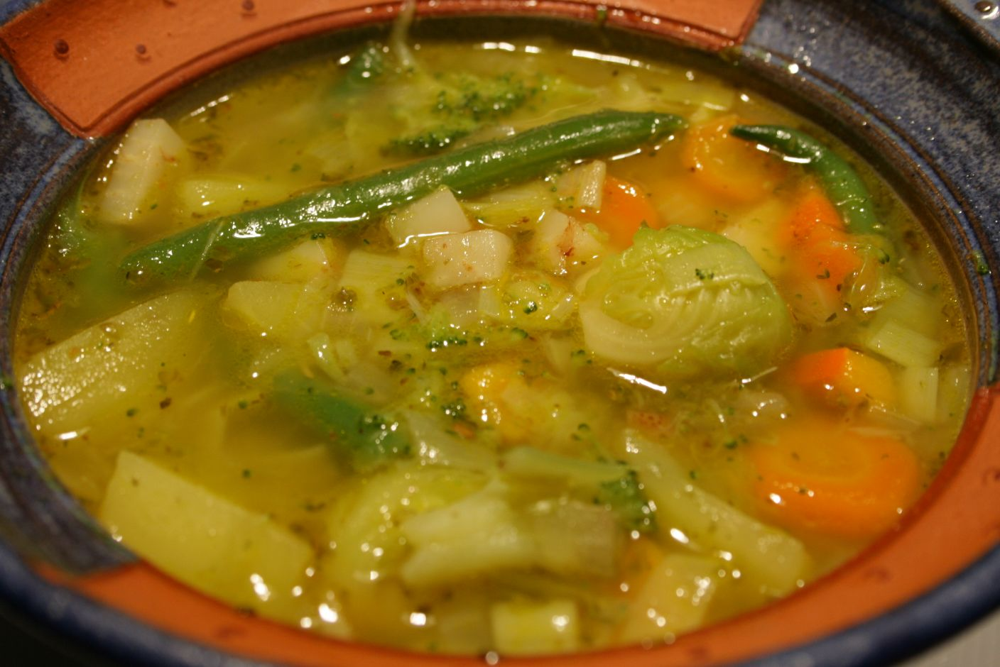

Vegetable Soup

Description
Soup of different vegetables, depending on the season
Ingredients
- 100g Celery
- 4 Carrots
- 1 small Leek
- 150g green Beans
- 1 small Onion
- 4 Potatoes
- 1l Meat or Vegetable Stock
- Margarine
- Salt
- Majoran
Steps
- Chop or dice the vegetables, heat the margarine in a pot, and add the vegetables.
- Sauté everything for 5 minutes.
- Then add the broth, cover, and cook for 10-15 minutes.
- Finally, season with salt and marjoram.
Home